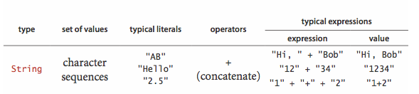

Programming Model
Our study of algorithms is based upon implementing them as programs written in the Java programming language. We do so for several reasons:
- Our programs are concise, elegant, and complete descriptions of algorithms.
- You can run the programs to study properties of the algorithms.
- You can put the algorithms immediately to good use in applications.
Primitive data types and expressions.
A data type is a set of values and a set of operations on those values. The following four primitive data types are the basis of the Java language:
- Integers, with arithmetic operations (int)
- Real numbers, again with arithmetic operations (double)
- Booleans, the set of values { true, false } with logical operations (boolean)
- Characters, the alphanumeric characters and symbols that you type (char)
The following table summarizes the set of values and most common operations on those values for Java's int, double, boolean, and char data types.
- Expressions. Typical expressions are infix. When an expression contains more than one operator, the precedence order specifies the order in which they are applied: The operators * and / (and %) have higher precedence than (are applied before) the + and - operators; among logical operators, ! is the highest precedence, followed by && and and then ||. Generally, operators of the same precedence are left associative (applied left to right). You can use parentheses to override these rules.
- Type conversion.
Numbers are automatically promoted to a more inclusive type if no
information is lost.For example, in the expression 1 + 2.5,
the 1 is promoted to the double value 1.0 and
the expression evaluates to the double value
3.5. A cast is a directive to convert a value of one type into a value of another type. For example (int) 3.7 is 3. Casting a double to an int truncates toward zero. - Comparisons. The following mixed-type operators compare two values of the same type and produce a boolean value:
- equal (==)
- not equal (!=)
- less than (<)
- less than or equal (<=)
- greater than (>)
- greater than or equal (>=)
- Other primitive types. Java's int has a 32-bit representation; Java's double type has a 64-bit representation. Java has five additional primitive data types:
- 64-bit integers, with arithmetic operations (long)
- 16-bit integers, with arithmetic operations (short)
- 16-bit characters, with arithmetic operations (char)
- 8-bit integers, with arithmetic operations (byte)
- 32-bit single-precision real numbers, with arithmetic operations(float)
- Comparisons. The following mixed-type operators compare two values of the same type and produce a boolean value:
Statements.
- Declarations
create variables of a specified type and name them with identifiers.
Java is a strongly typed language because the Java compiler
checks for consistency.
The scope of a variable is the part of the program where it is
defined.
- Assignments
associate a data-type value (defined by an expression) with a variable.
- Initializing declarations
combine a declaration with an assignment to initialize a variable at the same
time it is declared.
- Implicit assignments.
The following shortcuts are available when our purpose is to modify a variable's value
relative to the current value:
- Increment/decrement operators: the code i++ is shorthand for i
= i + 1.
The code ++i is the same except that the expression value is taken
after
the increment/decrement, not before.
- Other compound operators: the code i /= 2 is shorthand for i = i/2.
- Increment/decrement operators: the code i++ is shorthand for i
= i + 1.
The code ++i is the same except that the expression value is taken
after
the increment/decrement, not before.
- Conditionals
provide for a simple change in the flow of execution—execute the
statements in one of two blocks, depending on a specified condition.
- Loops
provide for a more profound change in the flow of execution—execute
the statements in a block as long as a given condition is true.
We refer to the statements in the block in a loop as the body of the loop.
- Break and continue.
Java supports two additional statements for use within while loops:
- The
breakstatement, which immediately exits the loop - The
continuestatement, which immediately begins the next iteration of the loop
- The
- For notation.
Many loops follow this scheme: initialize an index variable to some value and then use a
whileloop to test a loop continuation condition involving the index variable, where the last statement in thewhileloop increments the index variable. You can express such loops compactly with Java'sfornotation. - Single-statement blocks. If a block of statements in a conditional or a loop has only a single statement, the curly braces may be omitted.
The following table illustrates different kinds of Java statements.
Arrays.
An array stores a sequence of values that are all of the same type. If we have N values, we can use the notation a[i] to refer to the ith value for any value of i from 0 to N-1.- Creating and initializing an array.
Making an array in a Java program involves three distinct steps:
- Declare the array name and type.
- Create the array.
- Initialize the array values.
- Declare the array name and type.
- Default array initialization.
For economy in code, we often take advantage of Java's
default array initialization convention
and combine all three steps into a single statement.
The default initial value is zero for numeric types and false
for type boolean.
- Initializing declaration.
We can specify the initialization values at compile time,
by listing literal values between curly braces, separated by commas.

- Using an array.
Once we create an array, its size is fixed.
A program can refer to the length of an array a[] with the code
a.length.
Java does automatic bounds checking—if you access an array with
an illegal index your program will terminate with an
ArrayIndexOutOfBoundsException.
- Aliasing.
An array name refers to the whole array—if we assign one array name to another,
then both refer to the same array, as illustrated in the following code fragment.
This situation is known as aliasing and can lead to subtle bugs.int[] a = new int[N]; ... a[i] = 1234; ... int[] b = a; ... b[i] = 5678; // a[i] is now 5678. - Two-dimensional arrays. A two-dimensional array in Java is an array of one-dimensional arrays. A two-dimensional array may be ragged (its arrays may all be of differing lengths), but we most often work with (for appropriate parameters M and N) M-by-N two-dimensional arrays. To refer to the entry in row i and column j of a two-dimensional array a[][], we use the notation a[i][j].
Static methods.
Static methods are called functions in many programming languages, since they can behave like mathematical functions. Each static method is a sequence of statements that are executed, one after the other, when the static method is called.- Defining a static method.
A method encapsulates a computation that is defined as a
sequence of statements.
A method takes arguments
(values of given data types) and computes a return value
of some data type or causes a side effect.
Each static method is composed of a signature
and a body.
- Invoking a static method.
A call on a static method is its name followed by
expressions that specify argument values in parentheses, separated by commas.
When a method is called, its argument variables are initialized
with the values of the corresponding expressions in the call.
A return statement terminates a static method, returning control to the caller.
If the static method is to compute a value,
that value must be specified in a return statement.
- Properties of methods.
Java methods have the following features:
- Arguments are passed by value.
When calling a function, the argument value is fully evaluated and the
resulting value is copied into argument variable.
This is known as pass by value. Array (and other object) references
are also passed by value: the method cannot change the reference, but it
can change the entries in the array (or value of the object).
- Method names can be overloaded.
Methods within a class can have the same name, provided they have different
signatures. This features is known as overloading.
- A method has a single return value but may have multiple return
statements.
A Java method can provide only one return value.
Control goes back to the calling program as soon as the
first return statement is reached.
- A method can have side effects. A method may use the keyword void as its return type, to indicate that it has no return value and produces side effects (consume input, produce output, change entries in an array, or otherwise change the state of the system).
- Arguments are passed by value.
When calling a function, the argument value is fully evaluated and the
resulting value is copied into argument variable.
This is known as pass by value. Array (and other object) references
are also passed by value: the method cannot change the reference, but it
can change the entries in the array (or value of the object).
- Recursion.
A recursive method is a method that calls itself either directly or indirectly.
There are three important rules of thumb in developing recursive programs:
- The recursion has a base case.
- Recursive calls must address subproblems that are smaller
in some sense, so that recursive calls converge to the base case.
- Recursive calls should not address subproblems that overlap.
- The recursion has a base case.
- Basic programming model.
A library of static methods is a set of static methods that
are defined in a Java class.
A basic model for Java programming is to develop a program that
addresses a specific computational task by creating a library of static methods,
one of which is named main().
- Modular programming.
Libraries of static methods enable modular programming,
where static methods in one library can call static methods defined in
other libraries.
This approach has many important advantages.
- Work with modules of reasonable size
- Share and reuse code without having to reimplement it
- Substitute improved implementations
- Develop appropriate abstract models for addressing programming problems
- Localize debugging
- Work with modules of reasonable size
- Unit testing.
A best practice in Java programming is to include a main()
in every library of static methods that tests the methods in the library.
- External libraries.
We use static methods from three different kinds of libraries,
each requiring (slightly) differing procedures for code reuse.
- Standard system libraries in java.lang,
including java.lang.Math, java.lang.Integer, and
java.lang.Double. This libraries are always available in Java.
- Imported system libraries such as java.util.Arrays.
An import statement at the beginning of the program is
needed to use such libraries.
- Libraries in this book. Follow these instructions for adding algs4.jar to your Java classpath.
To invoke a method from another library, we prepend the library name to the method name for each call: Math.sqrt(), Arrays.sort(), BinarySearch.rank(), and StdIn.readInt().
- Standard system libraries in java.lang,
including java.lang.Math, java.lang.Integer, and
java.lang.Double. This libraries are always available in Java.
APIs.
- Java libraries.
- Our standard libraries.
- Your own libraries.
Strings.

- Concatenation.
- Conversion.
- Automatic conversion.
- Command-line arguments.
Input and output.
- Commands and arguments.
- Standard output.
- Formatted output.
- Standard input.
- Redirection and piping.
- Input and output from a file.
- Standard drawing.
Binary search.
Below is a complete Java program BinarySearch.java that illustrates many of the basic features of our programming model. It implement a classic algorithm known as binary search and tests it for an application known as allowlist filtering.
- Development client.
- Allowlisting.
For testing, we use the sample files
tinyAllowlist.txt,
tinyText.txt,
largeAllowlist.txt, and
largeText.txt.
- Performance.
Input and output libraries.
Here is a list of the input and output libraries that we use throughout the textbook and beyond.
We briefly describe the input and output libraries and include a sample client.
Standard input and standard output.
StdIn.java and StdOut.java are libraries for reading in numbers and text from standard input and printing out numbers and text to standard output. Our versions have a simpler interface than the corresponding Java ones (and provide a few technical improvements). RandomSeq.java generates random numbers in a given range. Average.java reads in a sequence of real numbers from standard input and prints their average on standard output.In.java and Out.java are object-oriented versions that support multiple input and output streams, including reading from a file or URL and writing to a file.
% java Average 10.0 5.0 6.0 3.0 7.0 32.0 3.14 6.67 17.71 <Ctrl-d> Average is 10.05777777777778
Standard drawing.
StdDraw.java is an easy-to-use library for drawing geometric shapes, such as points, lines, and circles. RightTriangle.java draws a right triangle and a circumscribing circle.
Draw.java is an object-oriented
versions that support drawing in multiple windows.
Standard audio.
StdAudio.java is an easy-to-use library for synthesizing sound. Tone.java reads in a frequency and duration from the command line, and it sonifies a sine wave of the given frequency for the given duration.
% java Tone 440.0 3.0
Image processing.
Picture.java is an easy-to-use library for image processing. Scale.java takes the name of a picture file and two integers (width w and height h) as command-line arguments and scales the image to w-by-h.

|

|

|
Q + A
Q. How important is it to use a good shuffling algorithm?
A. Here's an amusing anecdote of what happens when you don't do it correctly (and your business is online poker!). If you're running an online casino, here's the recommended approach for shuffling a deck of cards: (i) get a cryptographically secure pseudo-random number generator, (ii) assign a random 64-bit number to each card, (iii) sort the cards according to their number.
Creative Problems
- Binomial distribution. Estimate the number of recursive calls that would be used by the method call binomial1(100, 50, .25) in Binomial.java. Develop a better implementation that is based on saving computed values in an array.
Web Exercises
- Sattolo's algorithm.
Write a program Sattolo.java
that generates a unifomly distributed
cycle of length N using Sattolo's
algorithm.
- Wget.
Write a program
Wget.java that reads in
data from the URL specified on the command line and saves it
in a file with the same name.
% java Wget http://introcs.cs.princeton.edu/data/codes.csv % more codes.csv United States,USA,00 Alabama,AL,01 Alaska,AK,02 ... - Right triangle.
Write a client
RightTriangle.java
that draws a right triangle and a circumscribing circle.
% java RightTriangle

- Bouncing ball.
Write a program
BouncingBall.java
that illustrates the motion of a bouncing ball.